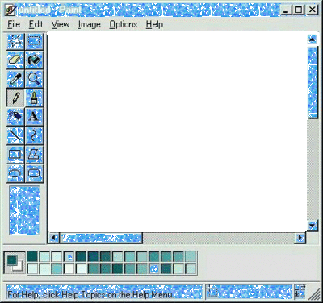
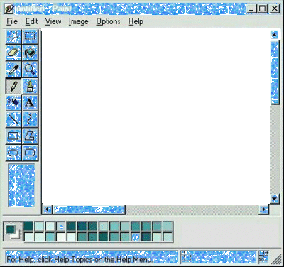

Darlo.net
Esta página web ha sido creada como parte de mi proceso de aprendizaje en HTML, CSS y JavaScript. Soy estudiante de Ingeniería Informática, actualmente cursando el cuarto año de carrera.
El propósito de este sitio es doble: por un lado, practicar y experimentar con tecnologías web;
por otro, usarlo como un blog personal con estética "web core",
inspirada en el internet de mi infancia. De ahí los GIFs animados,
y otros elementos visuales retro.
 El sitio está alojado en GitHub Pages por comodidad y
porque ofrece alojamiento gratuito para proyectos estáticos.
El sitio está alojado en GitHub Pages por comodidad y
porque ofrece alojamiento gratuito para proyectos estáticos.
La mayoría de las imágenes utilizadas han sido tomadas de otra página web (https://es.picmix.com/).
Que es el web core?
El estilo web core hace referencia a una estética visual inspirada en los primeros años
de internet, especialmente desde mediados de los 90 hasta principios de los 2000. Se caracteriza por el
uso de fondos animados, GIFs decorativos, tipografías sin refinar, colores brillantes, bordes pixelados
e interfaces que recuerdan a los sistemas operativos de esa época, como Windows XP. Más que una simple
elección visual, el web core busca transmitir nostalgia y autenticidad, recuperando la libertad creativa
y personal de las webs de aquella era, cuando los usuarios creaban sitios por diversión más que por
optimización.
Este proyecto es especialmente útil para el aprendizaje porque permite aplicar de forma práctica
conceptos fundamentales del desarrollo web. Al construir una página desde cero, se adquiere experiencia directa en estructura HTML, estilización con CSS y programación con JavaScript, además de aprender a organizar archivos, gestionar rutas, y publicar contenido en línea usando herramientas reales como GitHub. Es una forma activa y motivadora de consolidar conocimientos y ganar soltura con tecnologías del frontend.
 
Este sitio consta de cinco secciones:

Este sitio consta de cinco secciones:
Inicio (la página en la que te encuentras ahora)
Proyectos: Enlaces a mis proyectos de github
Galería: Fotos de los cuadros que pinto
1of1: Fotos de ropa que confecciono
Información